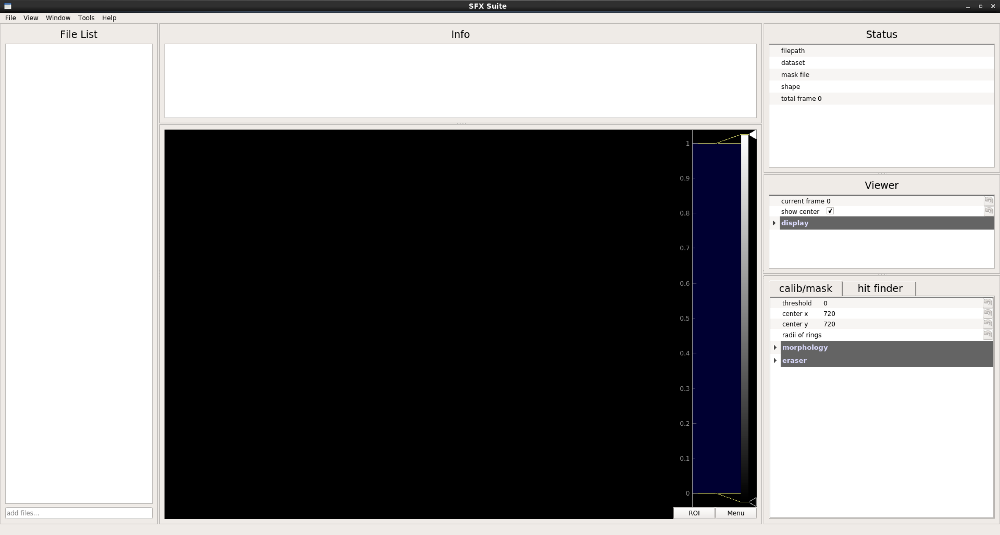

As a Python program, Click has the follwing dependencies:
For unix-like system, users can install these python libraries with package manager like apt in ubuntu, port in mac, yum in centos. Alternatively, Anaconda is highly recommended for Python-related library management.
First download anaconda and Click:
1 | wget https://repo.anaconda.com/archive/Anaconda2-5.3.0-Linux-x86_64.sh |
Note: Users can install Python3 version of Anaconda if you are not working at LCLS.
Install anaconda:
1 | bash /path/to/Anaconda-source.sh |
The anaconda installation process is self-explanatory. Most of popular scientific libraries will be installed by default.
Finally, install all dependencies:
1 | conda install mpi4py pyqtgraph docopt |
First we need create a project:
1 | python /path/to/Click/gui.py startproject proj_name -f facility_name |
Currently supported facilities including PAL-XFEL and LCLS. Besides, Click support offline analysis, the facility_name can be one of PAL/LCLS/local. If this command is executed successfully, a folder with proj_name will be created in current directory. Enter the project and start Click:
1 | cd proj_name |
If everything works, you will see a window like below:
